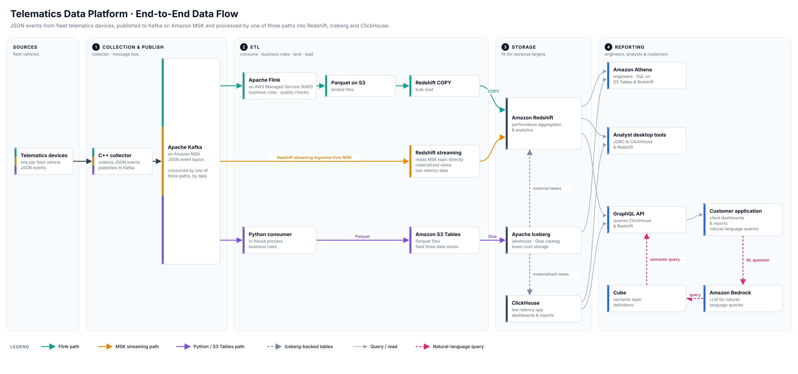
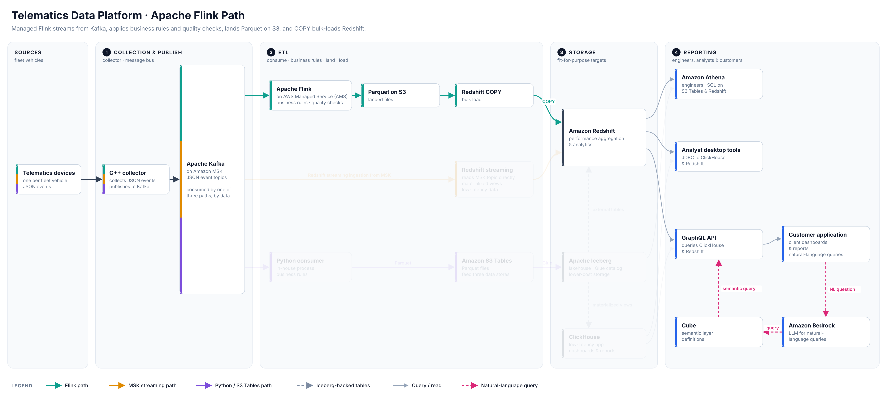
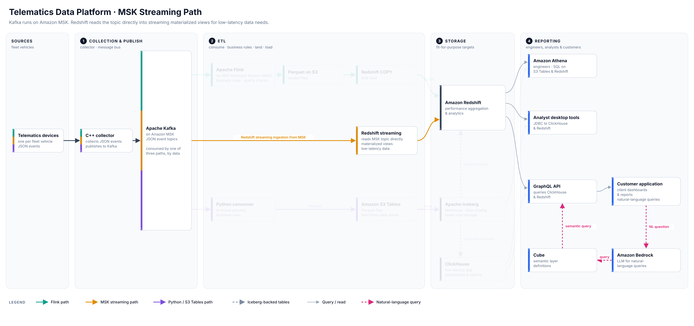
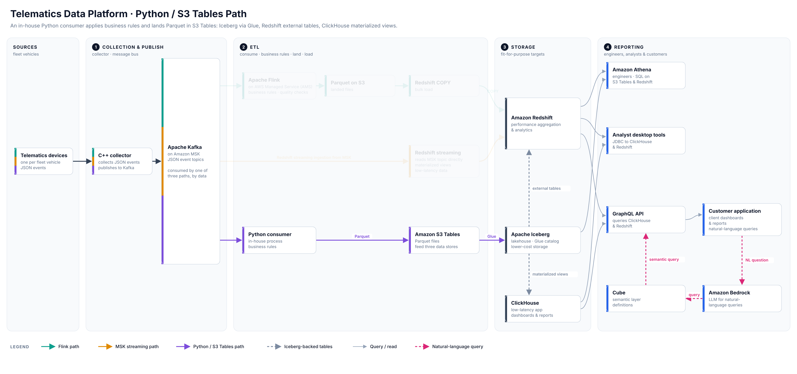
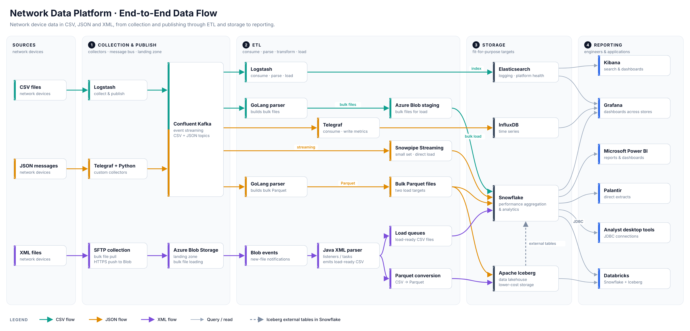
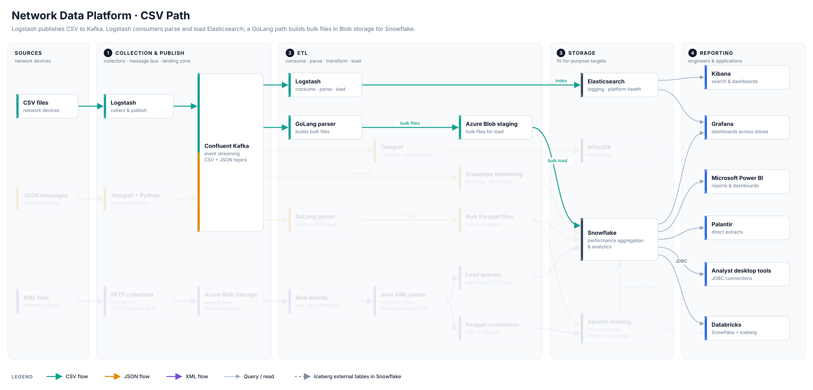
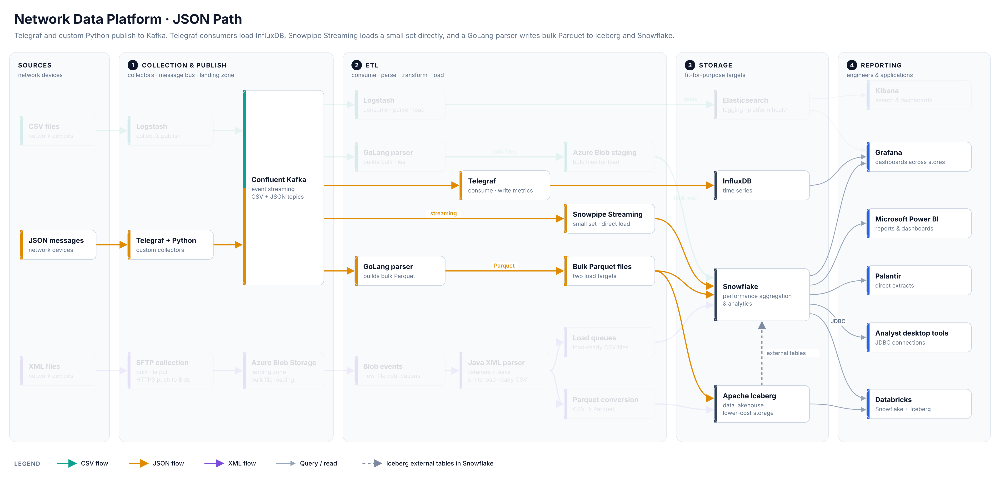
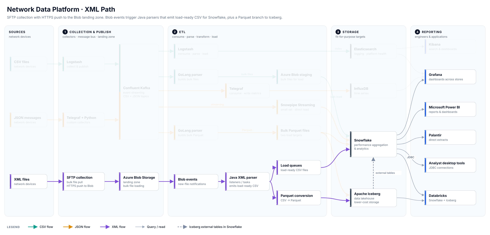

Data Platform Architecture Portfolio
I'm an engineering leader with 17+ years building streaming, ETL, lakehouse and analytics platforms. Each diagram below follows data through four stages: collection and publish, ETL, storage, and reporting. Highlight views trace one path at a time.
Sr. Manager, Software Engineering, Data Platforms · fleet telematics
Telematics devices, one per fleet vehicle, emit JSON events. A C++ collector publishes them to Apache Kafka on Amazon MSK. From there, each data set is consumed by whichever of three paths fits its latency and cost needs, and lands in a store chosen for how it will be read.
Engineers query with Athena, analysts connect over JDBC, and the customer application reads through a GraphQL API. Customers can also ask questions in plain language: Amazon Bedrock turns the question into a query against the Cube semantic layer, which runs it through the same GraphQL API.


Managed Flink applies business rules and quality checks, lands Parquet on S3, and Redshift COPY bulk-loads it.

Redshift reads the MSK topic directly into streaming materialized views for low-latency data.

An in-house Python consumer writes Parquet to S3 Tables. Iceberg, via Glue, feeds Redshift and ClickHouse.
Associate Technical Director · telecom network service assurance
Network devices report in three formats, and each format has its own collection and ETL path. CSV and JSON are published to Confluent Kafka by Logstash, Telegraf and custom Python collectors. Bulk XML files are pulled over SFTP and pushed over HTTPS to an Azure Blob landing zone.
ETL is a mix of Logstash, GoLang and Java parsers, Telegraf and Snowpipe Streaming. Each data set loads into the store that fits it: Elasticsearch for platform health, InfluxDB for time series, Snowflake for aggregation and analytics, and Apache Iceberg as a lower-cost lakehouse. Grafana, Kibana, Power BI, Palantir, Databricks and analyst JDBC tools read from those stores.


Logstash publishes to Kafka. Logstash consumers index Elasticsearch, and a GoLang parser builds bulk files in Blob for Snowflake.

Telegraf loads InfluxDB, Snowpipe Streaming loads a small set directly, and a GoLang parser writes bulk Parquet to Iceberg and Snowflake.

Blob events trigger Java parsers that emit load-ready CSV for Snowflake, with a Parquet branch to Iceberg.
Co-Wrote (Gabriel Colón) - Claude agents, Python tooling, PostgreSQL
An agentic workflow we built to run my own job search. Claude searches job boards, filters postings against my location, pay and seniority gates, and scores each one for fit. It then tailors a resume from a bank of verified accomplishments, and a local builder lints it and produces ATS-safe Word and PDF files.
I approve every draft. Claude fills in the application form but never submits it: I do. Afterwards it reads recruiter replies from Gmail and updates the matching row in PostgreSQL, the single system of record behind a small tracker app and a daily status chart.
I lead data platform engineering across streaming, batch ETL, open table formats and analytics, with a focus on reliability, cost and speed. I've led teams of 10 to 15 engineers and tech leads across US and offshore locations, and I'm based in Southern California.
Diagrams show architecture patterns only. They contain no customer data, internal hostnames, volumes or credentials.